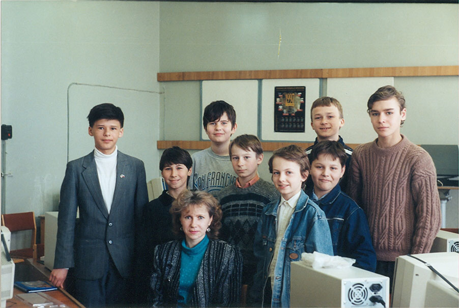
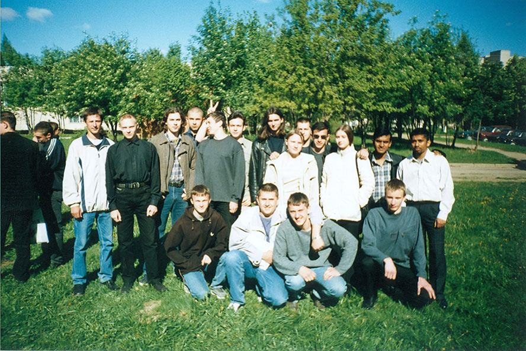
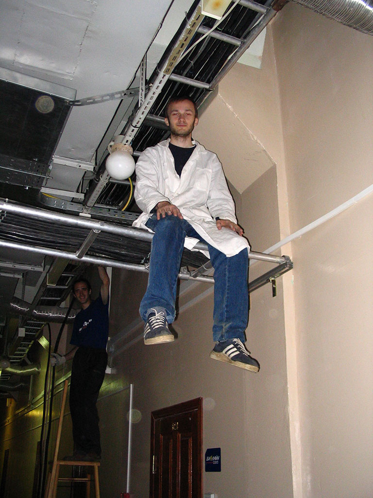
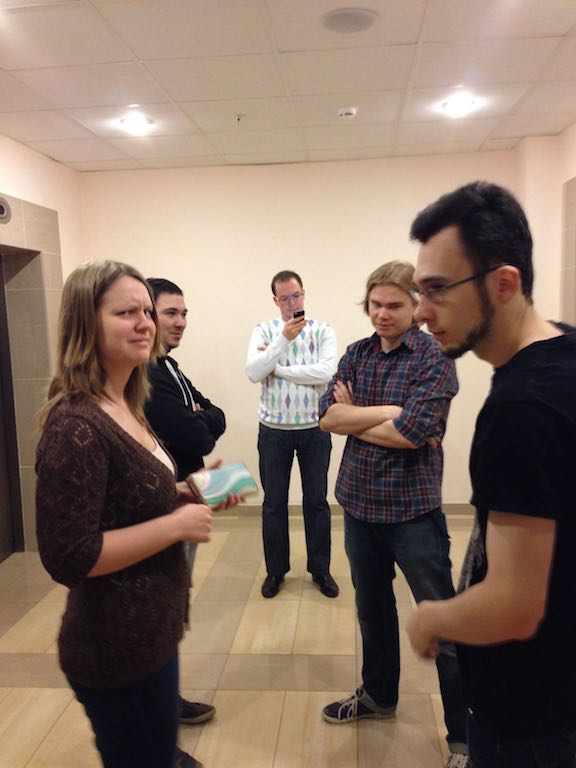

1991-2001: школы №9 и №31.
1997: кружок программирования ДТЮ.

1999: Фидонет, 2:5024/11.39.
2001-2007: ИВТ ВлГУ.

2005-2010: Интернет-провайдер Владимирской области elcom.ru.

2010-2015: Компания ДЕНИВИП Медиа.

Продолжение следует...